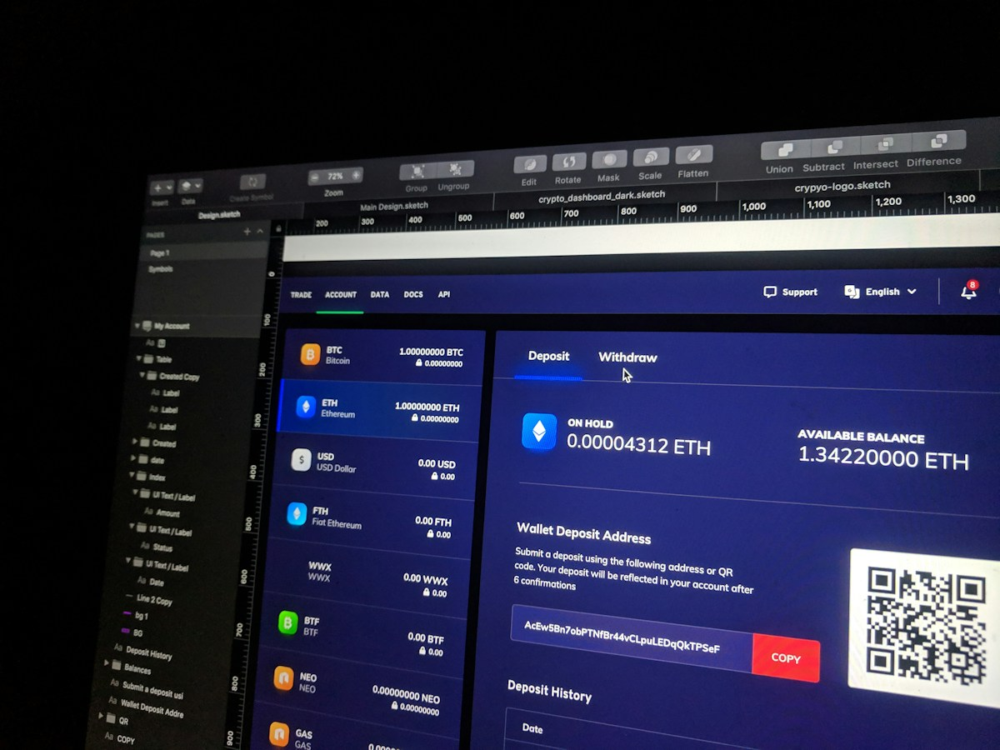

Sepakati masalah dan pengguna
Diskusikan kebutuhan pelanggan, tujuan bisnis, pasar, dan bahasa yang dibutuhkan website.
Berbasis di Lombok, Indonesia · GMT+8
Lombok Devlab terbuka untuk bekerja jarak jauh dengan bisnis dan tim di berbagai negara. Halaman layanan berbahasa Inggris membantu memulai diskusi tentang tujuan, kebutuhan, dan ruang lingkup proyek.

Kolaborasi lintas zona waktu
Tujuan, keputusan, dan materi yang terdokumentasi membantu tim berkolaborasi secara asinkron.
Diskusikan kebutuhan pelanggan, tujuan bisnis, pasar, dan bahasa yang dibutuhkan website.
Daftar halaman, fungsi, integrasi, konten, jadwal, biaya, dan tanggung jawab ditinjau sebelum proyek dimulai.
Tetapkan cara memberi masukan dan waktu respons yang sesuai perbedaan zona waktu.
Hosting, pemeliharaan, dokumentasi, dan pengembangan berikutnya dibahas sebagai bagian dari ruang lingkup.

Siap untuk pasar yang dituju
Website internasional dapat membutuhkan bahasa, mata uang, format kontak, kebijakan, dan integrasi yang berbeda. Setiap kebutuhan perlu dikonfirmasi terhadap pasar dan alur bisnis—bukan dianggap otomatis termasuk dalam paket awal.
Harga akhir, mata uang penawaran, jadwal, serta cara kerja proyek dibahas langsung. Harga USD yang tampil di halaman berbahasa Inggris hanyalah estimasi pembanding, bukan penawaran tetap.
Lihat halaman layanan globalMinta pembahasan awal
Mulai dengan ringkasan target pengguna, fungsi, dan hasil yang ingin dicapai.